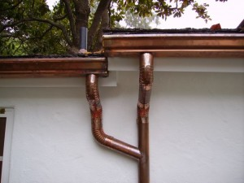

Gutters & Downspouts
Custom gutters, made and installed by us.
The profile you want, the color that matches your home, installed to look great and last. Our experienced crew takes pride in clean, precise work, and it shows.
Gutters & Downspouts
The profile you want, the color that matches your home, installed to look great and last. Our experienced crew takes pride in clean, precise work, and it shows.

Why it matters
Gutters are one of the most important lines of defense for your home's foundation, fascia, and landscaping, and in Santa Barbara, seasonal rain events can put real stress on systems that aren't up to spec.
We fabricate gutters in our own shop, which means we're not limited to off-the-shelf sizes and profiles. We also run seamless gutters on-site using our extruding gutter machine, continuous runs formed to the exact length of your roofline, with no joints to leak or separate over time. We build what fits your roofline, your downspout locations, and your home's architectural style, and we stock a wide selection of colors so your gutters can match your trim, fascia, or exterior paint exactly. Then our crew installs it properly, with the right slope, the right hangers, and the right connection details.
We've been doing this work in Santa Barbara for over 30 years. We know what holds up here and what doesn't.
Gutter profiles
We fabricate standard gutter profiles in a range of sizes, and can build custom profiles when the job calls for it. If you're trying to match existing gutters or satisfy an architectural review requirement, we can work from a sample or specification.
K-Style
The most common residential gutter profile in the US, a flat bottom and decorative ogee front that mimics crown molding. Available in 4", 5", and 6" widths. Handles high water volume efficiently and works well with most contemporary and traditional home styles.
Most popular for residential homes
Half-Round
A classic semicircular profile that's well-suited to older homes and Spanish Colonial architecture, common throughout Santa Barbara. Half-round gutters are often required or preferred on historic properties and design-reviewed projects. Paired with round or rectangular downspouts.
Preferred for Spanish Colonial & historic homes
Seamless
We run seamless gutters on-site using our own extruding machine, forming continuous sections to the exact length of your roofline with no mid-run joints. Fewer joints means fewer leak points, cleaner appearance, and longer runs without interruption. Available in K-style and most standard profiles.
Fewer leaks · Cleaner look · Longer runs · Faster install
Custom Profile
When a standard profile won't work, whether it's an unusual roofline, a historic match requirement, or a design review specification, we fabricate custom. We can work from your architect's drawings, a sample from the existing home, or a city specification.
For historic, design-reviewed & unusual rooflines
Materials
Not all gutter materials perform the same in Santa Barbara's coastal environment. Salt air, UV exposure, and seasonal rain cycles affect different metals differently. We'll help you choose what makes sense for your home, your budget, and how long you want it to last.
Copper
The premium choice. Copper develops a natural verdigris patina over time that's well-suited to Santa Barbara's aesthetic and coastal environment. Extremely long-lasting, a copper gutter system installed properly can last 50 years or more. Often required or preferred on historic and high-end properties.
Best for: Historic homes, high-end residential, long-term investment
Aluminum
Lightweight, rust-resistant, and available in a wide range of baked-on colors to match your home's exterior, trim, or fascia. The most common residential choice for good reason, it performs well in coastal conditions and doesn't require repainting. Available in standard and heavy-gauge.
Best for: Most residential applications, color-matching to trim & exterior
Galvanized Steel
Stronger than aluminum and suitable for high-load situations. Requires painting to maintain appearance and resist rust in coastal environments. A good choice for commercial applications or where structural strength matters more than weight.
Best for: Commercial, high-load, or heavy-rainfall applications
Stainless Steel
The most corrosion-resistant option, particularly well-suited to Santa Barbara's salt air environment. More expensive than aluminum or galvanized, but requires virtually no maintenance and won't rust. A smart long-term choice for oceanfront or high-exposure properties.
Best for: Oceanfront, high-exposure, or low-maintenance priority
Why Montie Wayne
01
Seamless gutters on-site
We bring our extruding gutter machine to your job and form seamless sections right on-site. Continuous runs to the exact length of your roofline, no joints to leak, separate, or collect debris.
02
We fabricate in-house
Beyond seamless, we run our own shop for custom profiles, copper work, and specialty fabrication. Not limited to what a supplier stocks.
03
We know this environment
30 years of installing gutters in Santa Barbara's coastal climate. We know what holds up to salt air, which materials fade, and how to detail a downspout connection that won't leak.
04
We know the design standards
Santa Barbara's architectural review process has specific expectations around materials and profiles. We know what will pass review and what won't, before we start.
05
Wide color selection
We stock gutters in a broad range of colors, whites, tans, grays, browns, and more, so you can match your home's exterior, trim, or fascia precisely. In a city where color palettes matter, that's not a small thing.
06
Courteous, clean crew
We clean up every day. We treat your property with respect and communicate clearly about what we're doing and when. That's not a sales line, it's in every review we've gotten.
What to expect
01
You reach out
Call or send us a message with the basics, property address, what you're looking for, any specific requirements. We'll follow up quickly.
02
We measure and quote
We come out, take accurate measurements, assess the roofline and downspout locations, and give you a clear written quote. We'll recommend the right profile and material for your situation.
03
We fabricate in our shop
Your gutters are made to spec in our Goleta facility. Custom lengths, your chosen profile, your chosen material. No inventory-limited compromises.
04
Our crew installs
We show up on time, install properly, clean up completely, and walk you through the finished work. Most residential gutter jobs are done in a day.
Get started
Call us or send a message, we'll get back to you the same business day.